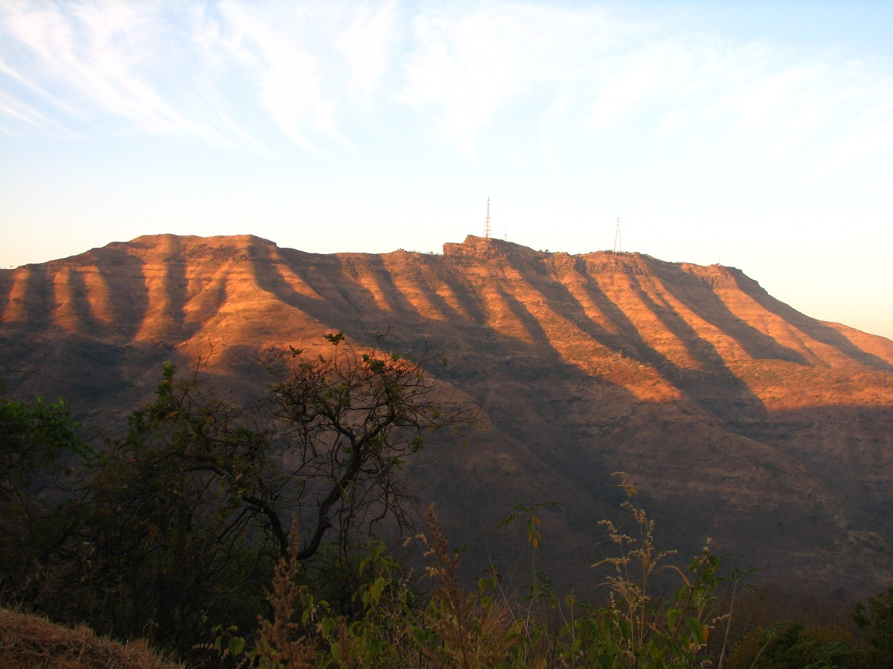

Sahyadri Region

Rajamachi Fort
Location: Lonavla/Karjat
Difficulty: Easy
Elevation: 2710 ft (826 m)
Scenic trail through forests and waterfalls; known for twin forts.
Read more

Lohagad Fort
Location: Malavli (Lonavala)
Difficulty: Easy
Elevation: 3400 ft (1036 m)
Historic fort with "Scorpion Tail" view, best for beginners.
Read more

Visapur Fort
Location: Near Lohagad, Lonavala
Difficulty: Medium
Elevation: 3556 ft (1083 m)
Slightly tougher than Lohagad, with great views and waterfalls.
Read more

Korigad Fort
Location: Aamby Valley, Lonavala
Difficulty: Easy
Elevation: 3050 ft (930 m)
Easy trek with a temple and lake atop.
Read more

Tikona Fort
Location: Near Pawna Lake
Difficulty: Easy
Elevation: 3600 ft (1100 m)
Triangle-shaped fort, short but steep climb.
Read more
Nashik Region
Harihar Fort
Location/Region: Trimbak, Nashik
Difficulty: Medium
Elevation: 3,676 feet (1,120 meters)
Famous for its iconic steep rock-cut steps and 80-degree climb.
Read more
Brahmagiri Hill
Location/Region: Near Trimbakeshwar, Nashik
Difficulty: Easy
Elevation: 4,248 feet (1,295 meters)
Spiritual hill with scenic views and the origin of the Godavari River.
Read more

Anjineri Hill
Location/Region: Near Trimbakeshwar, Nashik
Difficulty: Easy
Elevation: 4,264 feet (1,300 meters)
Believed to be the birthplace of Lord Hanuman; scenic steps and caves.
Read more
Ahmednagar Region
Ratangad Fort
Location/Region: Bhandardara
Difficulty: Medium
Elevation: ~4,250 feet (1,295 meters)
400-year-old fort surrounded by mountains, great for sunrise views.
Read more

Harishchandragad
Location/Region: Malshej Ghat
Difficulty: Hard
Elevation: ~4,665 feet (1,422 meters)
Known for Konkan Kada and ancient caves; long and scenic trail.
Read more
Kalsubai Peak
Location/Region: Bhandardara
Difficulty: Medium
Elevation: 5,400 feet (1,646 meters)
Highest peak of Maharashtra, with ladders for support and breathtaking views.
Read more
Pune Region

Sinhagad Fort
Location/Region: Near Pune City
Difficulty: Easy
Elevation: ~4,300 feet (1,310 meters)
Historic Maratha fort; popular for sunrise/sunset and breakfast.
Read more

Torna Fort
Location/Region: Velhe, Pune
Difficulty: Medium
Elevation: 4,603 feet (1,403 meters)
First fort captured by Shivaji Maharaj; panoramic view.
Read more
Rajgad Fort
Location/Region: Gunjavane, Pune
Difficulty: Medium
Elevation: 4,514 feet (1,376 meters)
Former capital of Maratha Empire; grand fort with camping options.
Read more
Raigad Region
Raigad Fort
Location/Region: Mahad, Raigad
Difficulty: Medium
Elevation: ~2,700 feet (820 meters)
Capital fort of Shivaji Maharaj; ropeway available.
Read more
Sarasgad Fort
Location/Region: Near Pali (Ashtavinayak)
Difficulty: Easy
Elevation: ~1,600 feet (487 meters)
Small but steep fort with rich history.
Read more

Lingana Fort
Location: Between Raigad and Torna Forts
Difficulty: Hard
Elevation: 2,969 feet (905 meters)
Steep pinnacle climb, not for beginners; requires technical climbing.
Read more
Satara Region

Ajinkyatara Fort
Location: Satara City
Difficulty: Easy
Elevation: ~3,300 feet (1,005 meters)
Offers city view and is well-paved, ideal for beginners.
Read more
Vasota Fort
Location: Bamnoli (via boat)
Difficulty: Hard
Elevation: ~3,800 feet (1,158 meters)
Dense jungle trek with boat ride and forest permission required.
Read more

Kamalgad Fort
Location: Near Wai, Satara
Difficulty: Medium
Elevation: ~4,511 feet (1,375 meters)
Isolated forest trek with vertical drop; unique hilltop structure.
Read more